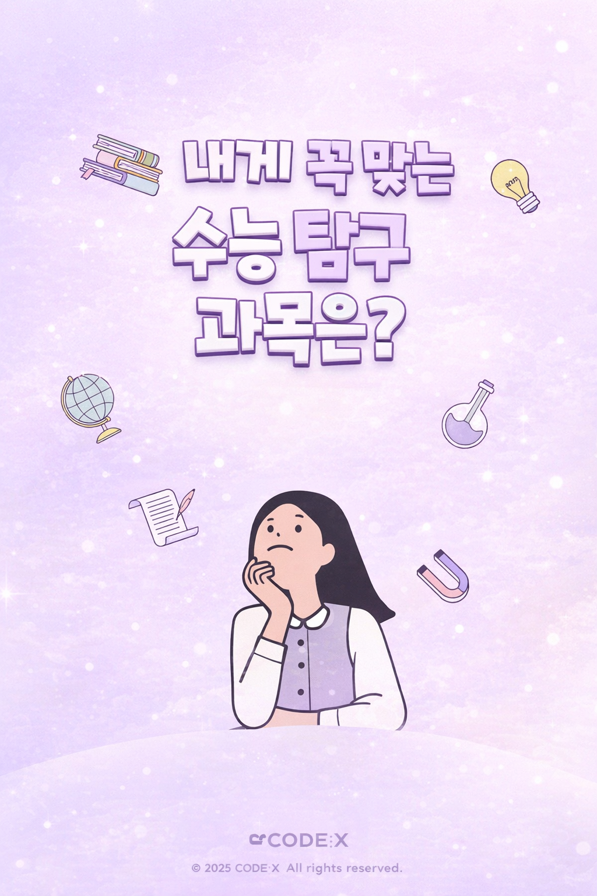

탐구과목 성향 테스트
문항 수는 24문항이며,
본인의 학습 성향과 가장 유사한 탐구과목 3가지
를 추천해 드립니다.

내게 꼭 맞는 수능 탐구 과목은?
24문항
TOP3 추천
시작하기
※ 각 문항에서 1~4 중 하나를 선택해주세요.
1 / 24
초기화
이전
다음
0 / 24 문항 응답
결과 보기
추천 과목 TOP 3
적합도는 코사인 유사도(0~1)이며, 높을수록 “요구 패턴이 닮음”을 의미합니다.
다시 하기
나의 학습 프로필
해석 가이드